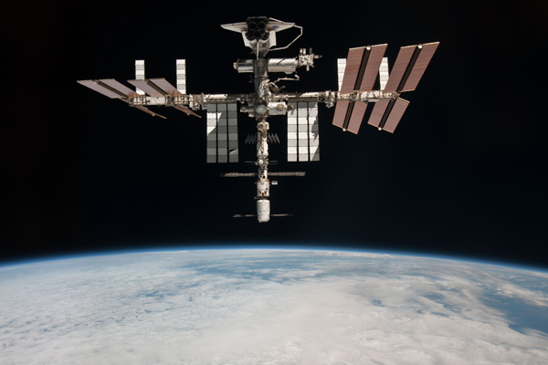

L'iSS, qu'est-ce que c'est ?
Sa Construction
Sa construction démarre en 1998 avec le module russe Zarya et se terminera en 2017
avec l'assemblage du module russe Nauka et du Bras Télémanipulateur Européen.
Ensuite, elle doit rester en fonction jusqu'en 2024. Sa construction a durée 15 ans.
Sa construction débute le 20 novembre 1998 lorsqu’une fusée russe Proton met en orbite
le module Zarya. Trois semaines plus tard, la navette spatiale Endeavour embarque
le premier module américain, le nœud de jonction Unity, et assemble les deux éléments.
Le troisième module, Zvezda, arrive en juillet 2000 et ouvre la voie à une
occupation humaine permanente qui commence le 2 novembre 2000.Plus d’une dizaine
d’années sera ensuite nécessaire pour donner à la station spatiale son apparence
actuelle, avec en particulier l’installation des premiers panneaux solaires
américains en l’an 2000, du laboratoire américain Destiny en 2001, du nœud Harmony
en 2007 et des laboratoires européen Columbus et japonais Kibo en 2008.
Cette construction sera malheureusement ralentie par l’explosion de
la navette Columbia le 1er février 2003. En juillet 2011, la station atteint
sa configuration finale, mis à part le laboratoire russe Nauka et le
bras robotique européen, tous deux prévus pour être lancés en 2014 ou plus tard.

Voici une image de la station spatiale internationale prise en mai 2011, donc elle atteignait bientôt
sa forme finale.
Son utilité
Cette station spatiale abrite, comme dit précédemment,
des laboratoires scientifiques. La station spatiale
fournit une plateforme pour réaliser des expériences
qui nécessitent qu'une des conditions inhabituelles
rencontrées dans l'espace soit présente. Les domaines
de recherche principaux comprennent la biologie, la
physique, l'astronomie et la météorologie. Selon les
directives adressées par le Congrès à la NASA en 2005,
le laboratoire américain Destiny est officiellement
considéré comme un laboratoire public national dans
le but d'accroitre son utilisation par l'ensemble
des agences fédérales et du secteur privé.